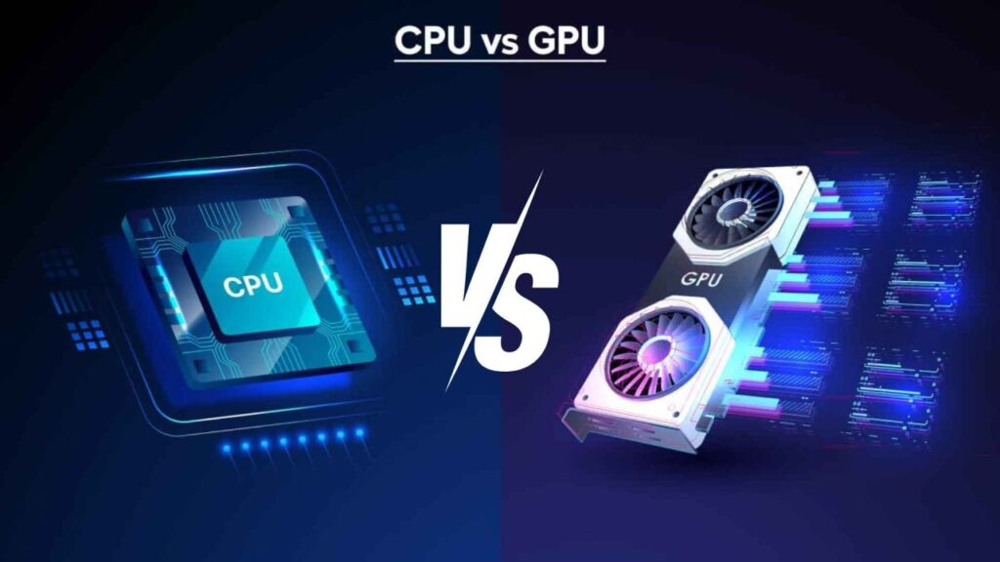
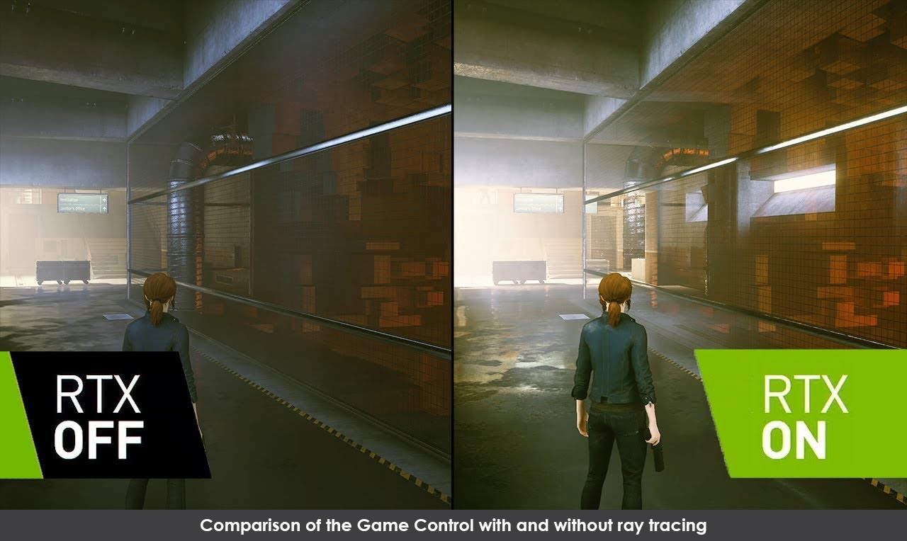

Архітектура та Принципи GPU
CPU проти GPU: Філософія паралелізму
Багато хто плутає центральний процесор (CPU) та графічний процесор (GPU), але вони побудовані за зовсім різними принципами. CPU — це "мозок" комп'ютера, який має невелику кількість дуже потужних ядер (зазвичай від 4 до 24). Він ідеально підходить для виконання послідовних задач, таких як запуск операційної системи, відкриття програм або логічні операції. CPU фокусується на мінімізації затримки (latency).
Натомість GPU створений для паралельних обчислень. Сучасна відеокарта, наприклад NVIDIA RTX 4090, має понад 16 000 невеликих ядер (CUDA-cores). Кожне з цих ядер слабше за ядро процесора, але разом вони можуть виконувати тисячі однакових математичних операцій одночасно. Це критично важливо для графіки, адже екран монітора складається з мільйонів пікселів, і колір кожного з них треба розрахувати одночасно 60, 144 або навіть 240 разів на секунду.
CPU - Послідовна обробка
- Ядра4-24
- ЧастотаДо 5.8 ГГц
- Кеш32-128 МБ
- ПризначенняЗагальні задачі
GPU - Паралельна обробка
- ЯдраДо 16,384
- Частота1.5-2.5 ГГц
- Пам'ятьДо 24 ГБ GDDR6X
- ПризначенняГрафіка, AI, обчислення
Архітектура сучасного GPU
Сучасний графічний процесор — це складна система з кількох ключових компонентів, кожен з яких відповідає за конкретні задачі.
CUDA/Stream Cores
Основні обчислювальні блоки GPU. Виконують математичні операції з floating-point числами. Чим більше ядер, тим вища продуктивність у рендерингу та обчисленнях.
RT Cores
Спеціалізовані блоки для трасування променів (Ray Tracing). Обробляють перетини променів з геометрією сцени, прискорюючи реалістичне освітлення у 10-20 разів.
Tensor Cores
Ядра для AI-обчислень. Використовуються в технологіях DLSS для масштабування зображення та генерації кадрів через нейромережі. Також критичні для тренування AI-моделей.
Texture Units (TMU)
Відповідають за вибірку та фільтрацію текстур. Забезпечують якісне накладання текстур на 3D-об'єкти з мінімальними артефактами.
Render Output Units (ROP)
Фінальний етап рендерингу. Записують піксельні дані в буфер кадру, обробляють anti-aliasing та змішування кольорів.
Memory Controller
Керує доступом до відеопам'яті (VRAM). Широка шина пам'яті (256-384 біт) забезпечує високу пропускну здатність для роботи з великими текстурами.
Відеопам'ять (VRAM): Швидкість критична

Відеокарта має власну оперативну пам'ять, яка називається VRAM. Вона набагато швидша за звичайну RAM у комп'ютері. Це необхідно, щоб швидко завантажувати гігабайти текстур високої роздільної здатності. Найпоширеніший стандарт сьогодні — GDDR6 та GDDR6X.
- GDDR5До 8 Гбіт/с на контакт
- GDDR6До 16 Гбіт/с на контакт
- GDDR6XДо 21 Гбіт/с на контакт
- HBM2e (High-End)До 460 ГБ/с пропускна здатність
Ширина шини пам'яті (наприклад, 128-біт, 256-біт або 384-біт) визначає, як багато даних може пройти за один такт. Це можна порівняти з шириною автостради: чим ширша дорога, тим більше машин (даних) проїде за годину. Навіть найшвидший чіп не зможе працювати на повну силу, якщо шина пам'яті занадто вузька ("пляшкове горлечко").
Приклад: RTX 4090 має 384-бітну шину та 24 ГБ GDDR6X пам'яті з пропускною здатністю 1008 ГБ/с. Це дозволяє обробляти 8K текстури без затримок.
Ray Tracing: Фізично точне освітлення
Трасування променів — це "Святий Грааль" комп'ютерної графіки. У класичному рендерингу (растеризації) об'єкти малюються пласкими шарами, а освітлення є лише імітацією. Трасування променів працює інакше: воно відстежує шлях віртуального променя світла від "очей" гравця до об'єктів у сцені, точно моделюючи фізичні закони відбиття та заломлення.

Коли промінь влучає в об'єкт, алгоритм розраховує, куди він відіб'ється далі, чи пройде крізь скло, чи створить тінь. Це вимагає мільярдів обчислень на секунду. Для цього сучасні GPU мають спеціальні апаратні блоки — RT Cores. Без них продуктивність в іграх з трасуванням падала б до неприйнятних значень.
Етапи Ray Tracing
Primary Rays
Промені випускаються з камери через кожен піксель екрана. Визначають, який об'єкт видимий у кожній точці.
Shadow Rays
Від точки перетину до джерела світла. Якщо промінь перекритий — піксель у тіні.
Reflection Rays
Відбиті промені від дзеркальних поверхонь. Створюють реалістичні відображення.
Refraction Rays
Промені, що проходять крізь прозорі об'єкти (скло, вода). Моделюють заломлення світла.
Продуктивність: RTX 4090 може обробляти до 191 TFLOPS у Ray Tracing операціях, що в 16 разів більше, ніж RTX 2080 Ti першого покоління.
AI та DLSS: Коли нейромережі малюють графіку
Сучасні відеокарти навчилися "домислювати" картинку. Технологія DLSS (Deep Learning Super Sampling) від NVIDIA використовує тензорні ядра (Tensor Cores) для масштабування зображення. Відеокарта рендерить гру в низькій роздільній здатності (наприклад, 1080p), що дає високий FPS, а потім нейромережа збільшує зображення до 4K.
DLSS 1.0 (2018)
Перше покоління. Працювало лише в деяких іграх, іноді створювало розмиття. Тренувалося окремо для кожної гри.
DLSS 2.0 (2020)
Універсальна модель для всіх ігор. Різке покращення якості, майже не відрізнити від native роздільності. Підтримка багатьох режимів.
DLSS 3.0 (2022)
Frame Generation — AI генерує проміжні кадри. RTX 4090 може показувати 200+ FPS замість 100 FPS без втрати якості.
DLSS 3.5 (2023)
Ray Reconstruction — AI покращує якість Ray Tracing, усуваючи шум та артефакти освітлення.
Нейромережа тренується на суперкомп'ютерах, аналізуючи мільйони ідеальних кадрів. Отриманий результат часто виглядає краще, ніж "чесні" 4K, тому що AI вміє згладжувати кути та відновлювати дрібні деталі.
Конкуренти
- AMD FSR 3Відкритий стандарт, без AI
- Intel XeSSAI-масштабування для Arc GPU
- КонсоліCheckerboard rendering, TSR
Шейдери: Програмовані ефекти
Шейдери — це невеликі програми, які виконуються на GPU для кожного вершини або пікселя. Вони дозволяють створювати складні візуальні ефекти.
Vertex Shaders
Обробляють вершини 3D-моделей. Відповідають за трансформацію, анімацію скелетів, хвилі на воді.
Pixel/Fragment Shaders
Розраховують колір кожного пікселя. Освітлення, тіні, туман, постпроцесинг ефекти — все це робота піксельних шейдерів.
Geometry Shaders
Можуть створювати або видаляти геометрію на льоту. Використовуються для ефектів часток, трави, шерсті.
Compute Shaders
Загальні обчислення на GPU. Фізика, симуляції рідини, постобробка зображень, AI-інференс.
Сучасні API: DirectX, Vulkan, Metal
Графічні API — це міст між вашою грою та залізом відеокарти. Вони визначають, як розробники можуть спілкуватися з GPU.
- DirectX 12 UltimateWindows, Xbox (Ray Tracing, Mesh Shaders)
- Vulkan 1.3Кросплатформний, низькорівневий
- Metal 3Apple (macOS, iOS)
- OpenGLЗастарілий, але широко підтримуваний
Тренд: Сучасні API дають розробникам прямий контроль над залізом, що дозволяє краще оптимізувати продуктивність, але вимагає більше експертизи.
Майбутнє GPU технологій
Індустрія не стоїть на місці. Ось що чекає на нас у найближчі роки:
- Path Tracing: Повністю фізично точний рендеринг в реальному часі
- AI Frame Generation 2.0: Генерація 3-4 кадрів на кожен рендерний
- Neural Rendering: GPU "малює" графіку через нейромережі замість традиційного рендерингу
- Chiplet архітектура: Модульні GPU з кількох окремих чіпів
- Квантові обчислення: Інтеграція квантових прискорювачів для AI
Графічні процесори перестали бути просто "картинкамалювачами". Сьогодні це універсальні обчислювальні монстри, які рухають вперед AI, науку, медицину та індустрію розваг.